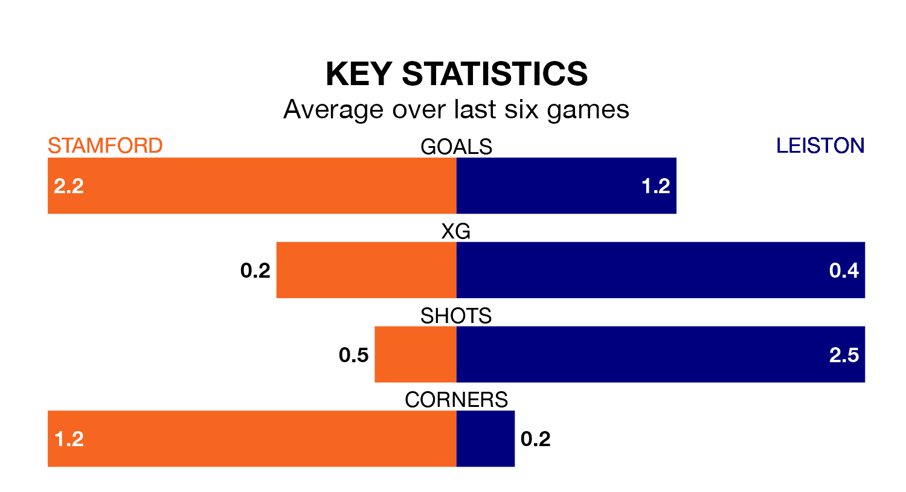

Leiston travel to Stamford on Saturday in the Southern League Premier Central.
The visitors come into the game on the back of a defeat in their last match, having lost to Stourbridge 1-0 at home.
Stamford also lost their last match, 2-1 against AFC Telford United.
With 66 goals in 32 games so far this season, Stamford are the league's joint-third-highest scorers with 2.1 goals per game. But they are conceding more than average too, letting in 51 goals at a rate of 1.6 per game.
Leiston, meanwhile, are average scorers, with 1.5 goals per game. They have conceded 1.6 goals per game.
The hosts are in disappointing form in the Southern League Premier Central, with one win and two draws from their last six games.
With two wins and a draw over that period, the away team's form is slightly better – they have taken seven points from 18, compared to Stamford's five.
Stamford are seventh in the table after 32 games, of which they have won 13 and drawn 10, earning 49 points.
Leiston are three places behind the home side in 10th, with 13 wins and eight draws putting them on 47 points.
Updated: 10:19 (UTC), 22/03/24